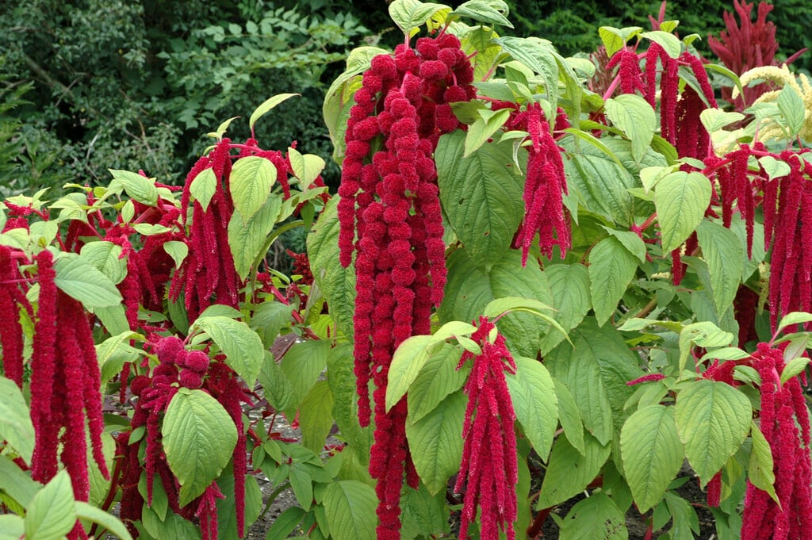
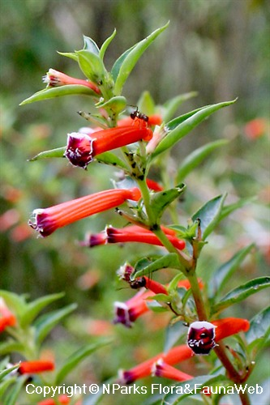
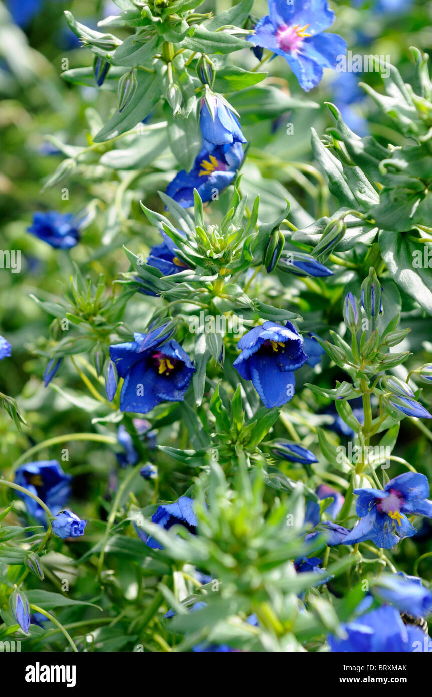
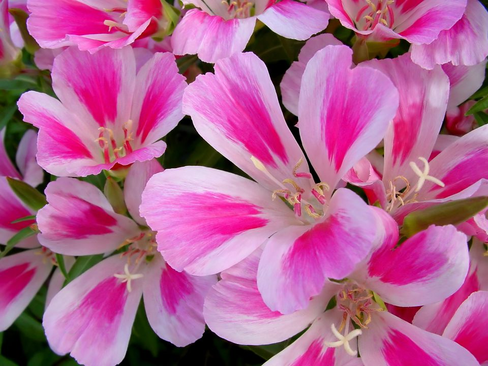

Plantes annuelles
Abutilon hybride

Ageratum houstonianum
Alternanthera magnifica
Alyssum maritimum (syn Lobularia maritima)

Amaranthus caudatus
Antirrhinum majus
Bassia scoparia (syn Kochia scoparia)
Begonia semperflorens
Bidens ferulifolia
Brachycome iberidifolia
Brassica oleracea
Calceolaria rugosa integrifolia
Calendula officinalis
Callistephus chinensis
Celosia cristata
Celosia plumosa
Chrysanthemum carinatum
Chrysanthemum segetum
Coleus blumei hybride
Coreopsis tinctoria

Cosmos bipinnatus

Cuphea platycentra ignea
Dianthus chinensis
Echeveria secunda
Eschscholtzia californica
Felicia amelloides (syn Agathea amelloides)

Gaillardia
Gaura lindheimeri
Gazania splendens
Gypsophila muralis

Helianthus annuus
Helichrysum italicum syn orientale
Helichrysum petiolare syn H. lanatum (syn Gnaphalium lanalanum)
Helichrysum microphylla (syn Gnaphalium mycrophyllum)
Heliotropium peruvianum
Impatiens walleriana
Iresine herbstii (syn Achyrantes verschaffeltii)

Kochia scoparia (syn Bassia scoparia)
Lantana camara
Lobelia erinus
Lobularia maritima
Mesembryanthemum criniflorum
Mimulus luteus
Nemesia strumosa
Nicotiana alata

Nicotiana x sanderae
Papaver glaucum
Papaver nudicaule
Papaver Rhoeas
Papaver somniferum
Pelargonium peltatum
Pelargonium zonale
Petunia x hybrida
Petunia x surfinia
Phlox drumondii
Plectranthus coleoides
Portulaca grandiflora
Pyrethrum parthenium
Tanacetum parthenium
Ricinus
Rudbeckia hirta
Salvia coccinea
Salvia farinacea
Salvia patens

Salvia splendens
Santolina chamaecyparissus
Sanvitalia procumbens
Scaevola aemula

Senecio cineraria
Tagetes erecta
Tagetes patula
Tropaeolum majus
Verbena rigida syn venosa
Verbena x hybrida
Zinnia elegans
Zinnia Haageana syn angustifolia

Zinnia angustifolia
Plantes rares (annuelles)
Acroclinium roseum
Alternanthera bettzickiana
Alternanthera magnifica
Alternanthera telanthera
Alternanthera tricolor
Ammi majus

Anagallis monelli
Anchusa capensis

Anethum graveolens
Argyranthemum frutescens

Asteriscus maritimus
Beta vulgaris
Capsicum frutescens
Carthamus tinctorius
Celosia spicata
Centaurea americana
Centaurea cyanus
Centaurea moschata
Chrysanthemum multicaule
Cirsium japonicum
Clarkia elegans
Cleome spinosa
Convolvulus sabatius
Craspedia globosa
Dahlia xhybride
Delphinium ajacis
Diascia barbareae
Echeveria desmetiana
Echeveria metallica
Echeveria secunda glauca
Erigeron karvinskianus

Euphorbia marginata
Euryops chrysanthemoides syn pectinatus
Foeniculum vulgare
Fragaria
Fuchsia xhybride

Glechoma hederaceae

Godetia
Gomphrena globosa
Helichrysum bracteatum
Helichrysum microphyllum syn. Gnaphalium microphylum
Helichrysum petiolare syn. Helichrysum lanatum syn. Gnaphalium lanatum
Impatiens New Guinea
Lotus berthelotii
Lycopersicum aesculentum
Lysimachia congestiflora
Lysimachia nummularia
Melampodium paludosum
Mentha suaveolens
Osteospermum x hybride
Pelargonium grandiflorum
Plectranthus coleoides

Sutera diffusus

Tagetes signata syn. tenuifolia
Thymophylla tenuiloba
Torenia fournieri
Verbena bonariensis
Plantes bisannuelles

Alcea rosea syn Althaea rosea
Althaea rosea syn Alcea rosea
Bellis perennis
Dianthus barbatus
Cheiranthus cheiri syn Erysimum cheiri
Erysimum cheiri syn Cheiranthus cheiri
Lunaria biennis
Myosotis alpestris
Primula x hortensis
Viola cornuta
Viola x wittrockiana